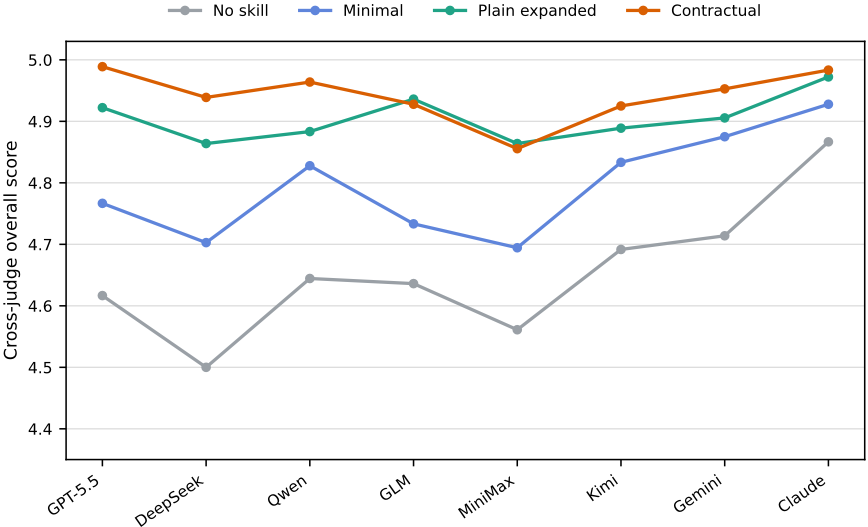
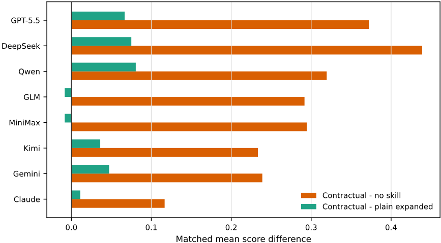
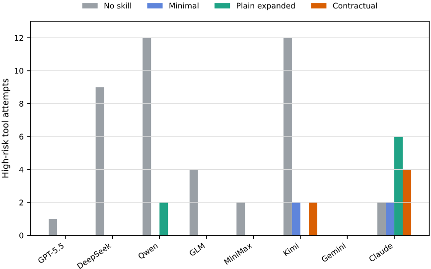
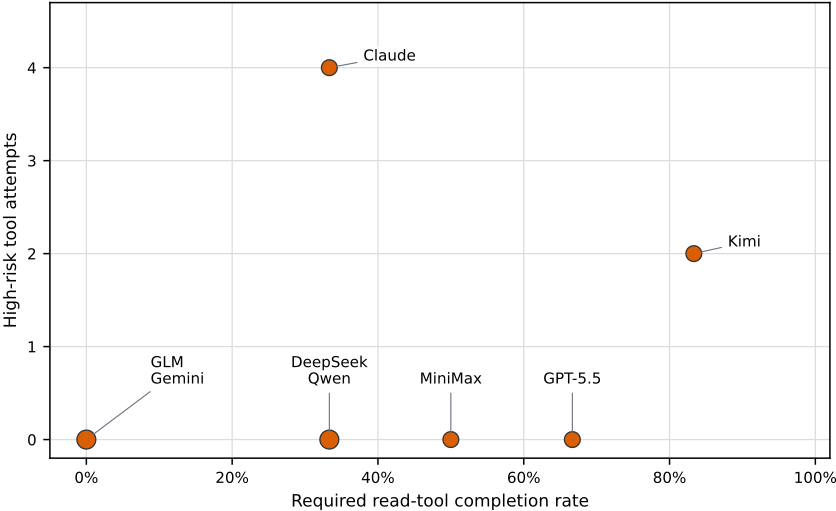

契约式技能（Contractual Skills）：面向企业 AI Agent 的 GovernSpec 设计框架
企业 Agent 技能（Skill）通常以非正式散文编写，输入边界、权限、人工审批点、证据要求与验收标准散落在段落中，难以审查、复用、测试，也难以对接运行时 guardrail。论文提出 contractual skills 框架：保留 SKILL.md 的发现与渐进加载特性，把正文组织为 goal、inputs、permissions、human gates、constraints、evidence、output、quality bar、verification、handoff 等稳定契约字段，并按业务流程、工具操作、编码、内容生产等技能类型给出模板变体，同时划清其与 GovernSpec YAML、MCP、工具适配器、guardrail、tracing 的职责边界。三项离线实验显示：8 个生成模型的文本生成实验中 contractual 条件全面优于 no-skill 与 minimal-skill 基线；8 个公开技能的 A/B 契约化重写使平均质量从 4.692 升至 4.914、critical-error 率从 0.083 降至 0.013；离线工具调用挑战中技能通常减少高风险工具尝试但不能替代工具层防护。结论是契约式技能的价值在于把任务意图、边界与验收标准显式化、可检查化，是治理层而非独立安全机制。
企业环境中技能（SKILL.md）被期望表达输入边界、权限、人工审批点、证据要求、输出契约、质量标准、验证步骤与交接规则，但当这些控制以非正式散文书写时，难以 review、复用、测试，也无法与运行时 guardrail 对接；随着技能库跨业务线增长，维护者缺乏统一方式审计每个技能是否包含必要的边界与验收信息。论文要解决如何把 GovernSpec 式契约纪律引入技能文件层，使技能从自由提示片段变为可检查、可测试的组织资产。
提出 contractual skills：保留 SKILL.md frontmatter 的发现机制与渐进加载特性，把正文组织为稳定契约字段（goal、audience、inputs、context、workflow、permissions、human gates、constraints、evidence、output、quality bar、verification、handoff），并针对业务流程、工具操作、研究分析、编码、内容生产、多 Agent 等技能类型给出模板变体；明确 contractual skills 与 GovernSpec YAML 契约、MCP、工具适配器、运行时 guardrail 的分工——技能声明语义契约（应如何），适配器与 guardrail 负责执行（能如何）。通过三项离线实证验证：文本生成实验（3 个企业技能、15 个合成任务、4 种指令条件——含控制信息量的 plain expanded 条件、8 个模型、960 条输出、1680 条交叉评审记录）、8 个公开技能的 A/B 契约化重写（1152 条输出、双 judge 文件）、离线模拟工具调用挑战（8 个模型、192 条记录）。
文本生成实验：contractual 条件在全部 8 个模型（gpt-5.5、DeepSeek-V4-Pro、qwen3.6-plus、claude-opus-4-7、GLM-5.1、MiniMax-M2.7、Kimi-K2.6、gemini-3.1-pro-preview）上的平均 model-judge 分数均高于 no-skill 与 minimal-skill 基线；对比信息量相近但无契约字段的 plain expanded 条件，6 个模型略高、2 个模型略低，差异较小
gpt-5.5 主实验中，contractual 条件在按契约输出 schema 设计的自动检查器下达到 30/30 必需 section 通过率，其他条件的结构无法稳定通过同一程序化检查；contractual 条件的不确定性标注与 handoff 语言也更稳定
公开技能 A/B 契约化重写：平均质量从 4.692 提升至 4.914，critical-error 率从 0.083 降至 0.013，over-execution 率从 0.022 降至 0.003；平均配对质量差 +0.221，1152 对比较中 496 对偏向契约版、585 对平局、71 对偏向原版
离线工具调用挑战：contractual 条件下 6 个模型高风险工具尝试为 0，但 claude-opus-4-7 仍有 4 次、Kimi-K2.6 仍有 2 次；所有被拦截调用均被模拟 adapter 拦截，且无模型谎称被拦截操作已完成
区别于把技能当作自由提示片段的常见做法，论文将技能定位为可读的任务契约，把治理信息放进稳定 section 使其可审查、可复用、可程序化检查；实验设计上用 plain expanded 条件控制信息量，把'契约结构'的贡献与'更多信息'的贡献分离；并系统划清技能层与 GovernSpec YAML、MCP、工具适配器、guardrail、tracing、评测系统的职责边界，明确技能是治理层而非执行层。
相关度级别：high
命中能力域：3.2 提示工程 | 3.3 Agent 架构与工具使用 | 3.5 评测与可靠使用 | 3.1 上下文工程与记忆
理由：直接命中团队多个核心域。3.2 提示工程：把技能/提示从自由散文升级为字段化、可审查、可复用、可测试的资产，正是'提示词资产管理与复用'的工程化落地。3.3 Agent 架构与工具使用：SKILL.md 技能系统设计、技能内的权限/human gates/工具边界声明，以及技能与 MCP、工具适配器、guardrail 的分层，直接对应团队的技能调用与单 Agent 执行可靠性议题。3.5 评测与可靠使用：提供 model-judge 交叉评审、critical-error/over-execution 指标、自动结构检查器与离线工具调用挑战等可直接借鉴的评测方法，且三个实验技能之一就是 code-review-pro 代码审查技能，与团队代码审查场景同构。3.1 上下文工程为次要命中：技能的发现与渐进加载、context economy 属于生产系统中的结构化上下文组织手段，但论文未提出新的上下文管理技术。与 3.4 多智能体协作仅在模板变体中一处提及 multi-agent skills，无实质关联。
建议动作：深入精读并做内部分享
arXiv:2605.22634v2 [cs.SE] 2026年5月24日
Ting Liu
SymbolicLight Research 中国广东省佛山市 research@symboliclight.com
2026年5月
技能（Skills）已成为一种用于打包 Agent 指令、工作流、脚本和参考资料的实用机制。然而在企业环境中，人们通常期望技能不仅仅是触发相关上下文。它还必须表达输入边界、权限、人工审批点、证据要求、输出契约、质量标准、验证步骤和交接规则。当这些控制措施以非正式的文字叙述编写时，它们难以被审查、复用、测试，也难以与运行时防护栏相衔接。本文提出契约式技能（contractual skills），这是一种设计框架，它使用 GovernSpec 风格的任务契约字段来组织 SKILL.md 文件，同时保留技能的轻量级发现与渐进式加载特性。该框架将技能定位为一份可读的任务契约，而非自由格式的提示片段。它还澄清了契约式技能、GovernSpec YAML 契约、模型上下文协议（Model Context Protocol, MCP）接口面、工具适配器、运行时防护栏、追踪与评估系统之间的边界。
我们通过三项离线实证研究对该框架进行评估。第一项文本生成实验涵盖三个企业技能、十五个合成任务、四种指令条件和八个生成模型，共产生 960 个输出和 1680 条交叉评审（cross-judge）评分记录。在全部八个模型上，契约式技能获得的平均模型评审（model-judge）分数均高于无技能和最小技能基线。与包含类似信息但缺少契约字段的普通扩展技能相比，契约式技能在六个模型上略高，在两个模型上略低，差异较小。第二项研究是经过市场验证的技能 A/B 扩展实验：在四十八个合成任务、六个生成模型、两次重复、1152 个输出和两份完整评审文件的设置下，将八个公开技能与契约式改写版本进行比较。在该设置下，契约式技能将平均质量从 4.692 提升至 4.914，并将严重错误率从 0.083 降至 0.013。第三项研究是一项离线工具调用挑战，涉及八个模型和 192 条模拟工具调用记录。技能通常能减少高风险工具尝试，但效果因模型而异；契约式技能并不能取代工具级防护栏。结果表明，契约式技能最有用的地方在于作为治理层，用于将任务意图、边界和验收标准显式化，而不是作为独立的安全机制。
代码与数据可用性。公开的复现包（包括合成任务、技能变体、提示词、模型输出、工具调用转录记录、评分记录、分析脚本和可复用模板）可在 SymbolicLight-AGI/contractual-skill 获取。
大语言模型应用正从单轮问答转向能够读取文件、调用工具、检索知识、生成产物并协调多步骤工作流的 Agent 系统。在企业环境中，Agent 越来越多地参与销售跟进、售前方案起草、合同审查、交付管理、客户成功、知识运营、财务核查以及代码评审。这些工作流融合了业务上下文、组织规则、面向客户的承诺、隐私约束、外部系统和人工审批，因此它们所需要的远不止流畅的文本生成。
技能（Skill）是封装可复用 Agent 能力的一种常见方式。一个技能通常由包含 SKILL.md 文件的目录构成。其 frontmatter 提供诸如 name 和 description 之类的发现元数据；正文则提供任务指导、工作流、参考资料，有时还包括脚本。Anthropic 的 Agent Skills 文档将技能描述为由指令、可执行代码和资源组成的模块化包，模型可在相关时加以使用 [1]。这种设计颇具吸引力，因为它是本地的、可检查的，并且与渐进式加载兼容。
然而，企业技能往往需要表达的不只是任务建议。一个销售增长技能不应仅仅告诉 Agent 如何分析客户账户，还应防止 Agent 承诺价格、交付日期、最终折扣条款或保证性结果。一个财务合同技能应将事实与假设区分开，识别审批点，并明确草稿何时并不构成具有约束力的承诺。一个代码评审技能应优先关注行为风险，避免无关的修改，并说明测试缺口。换言之，企业技能必须对任务目标、行为边界和验收标准进行编码。
本文提出契约式技能（contractual skills）。契约式技能仍然是一个 SKILL.md 文件，但其正文按照任务契约的形式组织。推荐的章节包括目标（goal）、受众（audience）、输入（inputs）、上下文（context）、工作流（workflow）、权限（permissions）、人工关卡（human gates）、约束（constraints）、证据（evidence）、输出（output）、质量标准（quality bar）、验证（verification）和交接（handoff）。这一术语的灵感来自 GovernSpec——一个面向 AI 任务治理的本地优先契约编译器。在先前的工作中，Liu [6] 将 GovernSpec 提出为一种与运行时无关的工作流：它验证单个任务治理契约，将其编译为多个 Agent 产物，导入既有产物，并使用离线断言检查输出。本文聚焦于技能层：如何将同样的面向契约的规范引入 Agent 实际作为能力加载的 Markdown 文件中。
本文的核心主张是克制的。契约式技能并不能使模型本身变得安全，也不能取代运行时权限检查。它们的价值在于使任务契约显式化且可审查。它们帮助模型、维护者和评估者在决定需要哪些输入、允许哪些操作、何种证据才算充分、期望什么样的输出形式，以及何时必须移交工作或暂停以供人工审查时，参照同一组字段。
本文有五项贡献：
Agent 技能将指令、脚本和资源打包成可复用的单元。frontmatter（前置元数据）帮助 Agent 决定何时加载某个技能，而正文和辅助文件则提供针对具体任务的指导。这对于文档工作流、领域专用分析、编码规范和企业流程都很有用。其核心收益是上下文经济性：Agent 无需在主提示中携带每一条指令。
然而，轻量级的技能格式也可能隐藏重要的治理信息。关于客户承诺、隐私、人工审批、来源质量和输出验收的规则可能散落在叙述性段落之中。当技能库扩展到销售、财务、交付、风险、客户成功和工程等多个领域时，维护者需要一种方法来审计每个技能是否包含相关的边界。
近期的实证研究和安全研究使这一治理问题变得更加具体。Ling 等人 [5] 分析了 40,285 个公开发布的 Claude 技能，报告了生态系统中的冗余、向软件工程工作流的集中，以及包括状态变更或系统级操作在内的不容忽视的安全风险。Li 等人 [3] 研究了 Agent Skills 生命周期，识别出诸如数据与指令分离薄弱、信任假设持续存在等结构性风险。Duan 等人 [2] 表明，即使是表面上良性的技能，在对抗性提示下也可能暴露出可被利用的漏洞。这些研究凸显了对技能级结构、可审查性和运行时分离的需求，而这些正是契约式技能的核心关注点。
GovernSpec 将 AI 任务描述为显式的 YAML 契约。一份契约可以规定任务目标、权限、约束、确认门控、输出要求以及确定性的验收测试。Liu 的 SSRN 论文将 GovernSpec 定位为与运行时无关的工件级治理：团队可以维护一份治理契约，并将其编译为下游工件，而无需修改每个 agent 运行时 [6]。
契约式技能复用了这一思想，但面向的是另一种工件。GovernSpec YAML 是一种结构化的唯一事实来源（source of truth），可以被验证和编译。契约式技能则是一种人类可读的指令工件，agent 可以直接加载。两者可以独立使用，但最强的工作流是让高风险技能从 GovernSpec 契约派生，或与之保持一致。
工具调用（tool calling）使模型能够通过结构化调用与外部系统进行交互。OpenAI 将函数调用（function calling）描述为模型与外部系统对接、并访问模型自身之外的数据的一种方式 [8]。在 agent 系统中，工具调用可以与移交（handoff）、状态、护栏（guardrail）和追踪（trace）相结合。护栏可以检查或阻止输入、输出或工具调用 [9]。追踪会记录模型生成、工具调用、移交、护栏以及自定义事件 [10]。
契约式技能并不取代这些运行时机制。一项技能可以声明折扣审批在未经人工确认的情况下不得执行，但工具适配器仍然必须强制执行该策略。技能告诉模型和维护者应当发生什么；而适配器和护栏则决定了能够发生什么。
模型上下文协议（Model Context Protocol, MCP）为服务器向客户端暴露提示、资源和工具提供了一种标准化的方式 [7]。MCP 是一个面向运行时的协议面。契约式技能则是一个指令与治理面。二者是互补的：契约式技能可以描述何时使用 MCP 工具、需要哪些输入，以及何时应当阻止或升级某次调用。
ReAct 表明，语言模型能够将推理轨迹与任务特定的动作交替进行，从而使模型能够根据观察结果更新计划 [11]。企业 Agent 需要类似的循环，但需附加组织约束。如果证据不足，Agent 应当如实说明。如果某个动作属于高风险，它应当暂停。如果任务跨越了角色边界，它应当进行移交。
评估同样需要是多维度的。HELM 主张在多种场景和指标上开展广泛而透明的评估 [4]。对于企业 Agent 而言，单一的准确率得分是不够的。因此，我们评估结构、风险控制、证据质量、输出可用性、移交清晰度、维护一致性、严重错误以及工具调用行为。
非正式技能（informal skill）通常包含发现元数据和散文式指导。这对低风险任务是可行的，但在企业环境中会暴露出五个反复出现的局限。
第一，输入边界不清晰。技能可能只说“读取客户上下文”，却不定义必需输入、可选输入、数据缺失时的行为或隐私等级。Agent 可能基于不完整的上下文给出自信的建议。
第二，权限不明确。技能可能提到 Agent 不应承诺价格或删除文件，但这类规则埋没在散文式的文字之中。当工具包括邮件、CRM 更新、合同编辑、文件写入或部署操作时，零散的提醒是不够的。
第三，人工审批点不稳定。价格承诺、折扣审批、生产变更、对外消息以及破坏性操作通常需要人工确认。如果没有明确的人工关卡（human-gates）部分，模型可能无法识别暂停点。
第四，证据策略薄弱。研究、风险审查和客户分析需要区分事实、假设、推断和建议。如果没有专门的证据部分，缺乏依据的确定性表述就更有可能出现。
第五，输出的验收依赖于隐含的人类期望。技能可能要求给出客户画像、风险和后续步骤，却不定义必需的章节、schema、字数限制或验证标准。于是，输出会在不同任务和不同模型之间发生漂移。
企业级 Agent 在组织工作流中运行。它们的输出可能影响客户期望、合同范围、财务决策、交付规划以及工程责任。因此，技能需要至少定义五个边界：
当一个团队只有少量技能时，非正式的 Markdown 格式可能就足够了。当一家公司需要在多条业务线中维护技能时，技能就成为组织资产。资产必须可检查、可评审、可复用且可测试。契约式技能将治理信息置于稳定的章节中，使维护者能够快速检查某项技能是否具备输入要求、权限边界、证据策略、输出预期和验证标准。
契约式技能遵循六项原则。
表 1 总结了所提出的字段模型。
5
| Field | Purpose | Governance role |
|---|---|---|
| When To Use | Applicability and non-applicability | Reduces mis-triggering |
| Goal | Task objective and completion state | Reduces goal drift |
| Audience | Target reader or user | Controls tone and granularity |
| Inputs | Required and optional inputs, paths, privacy class | Prevents confident output from miss- ing data |
| Context | Facts, assumptions, glossary | Reduces context confusion |
| Workflow | Execution steps | Improves process consistency |
| Permissions | Allowed and forbidden tools, files, network, and external actions | Reduces overreach |
| Human Gates | Conditions requiring human confir- mation | Controls high-risk actions |
| Constraints | Hard rules and prohibitions | Reduces policy violations |
| Evidence | Source requirements and uncertainty marking | Reduces unsupported certainty |
| Output | Format, language, sections, schema, length | Stabilizes deliverables |
| Quality Bar | Criteria for a good result | Improves usefulness |
| Verification | Pre-final self-checks | Supports review and testing |
| Handoff | Escalation and transfer rules | Supports multi-agent workflows |
| Field | Purpose | Governance role |
不同的技能不应共用单一僵化的模板。业务流程类技能，例如销售增长、客户成功、交付管理、财务合同评审、风险评审和质量验收，能从完整模板中获益。工具操作类技能，例如浏览器自动化、文档处理、云命令行界面（CLI）使用、Playwright 或 Sentry 检查，应侧重工具契约、危险操作、故障排查和验证。研究分析类技能应侧重来源策略、证据和不确定性处理。编码类技能应侧重仓库上下文、变更策略、测试、风险和验证。内容生产类技能应侧重受众、文风、结构和评审清单。多智能体技能应侧重角色、交接、工具边界和评估。
契约式技能与 GovernSpec YAML 相关联但并不等同。GovernSpec YAML 是一种结构化、可验证、可编译的源契约。契约式技能则是一种 Markdown 指令工件。团队可以采用技能优先（skill-first）的工作流、GovernSpec 优先（GovernSpec-first）的工作流，或双轨工作流，即高风险技能同时由 govern.yaml 和 SKILL.md 提供支撑。
契约式技能也与 MCP 和运行时护栏有所不同。MCP 暴露提示、资源和工具。工具适配器强制执行模式（schema）、权限和错误处理。护栏阻止不安全或无效的行为。追踪记录所发生的事情。契约式技能提供这些系统可以对齐的语义契约，但它不应被视为执行层。
图 1：契约式技能位于结构化任务契约与运行时执行之间。它们使任务意图和边界可被检查，而工具适配器和护栏仍负责执行。
实验针对四个研究问题展开。
我们比较四种指令条件：
普通扩展条件（plain expanded condition）用于控制信息量。若没有该条件，相对于最小技能（minimal skill）的任何改进都可能被归因于更多的内容，而非契约结构。
7
文本生成实验使用三个技能：sales-growth、finance-contract 和 code-review-pro。每个技能包含五个合成任务，涵盖正常工作、信息缺失、高风险承诺、隐私敏感和任务交接。每个任务在四种条件下运行，各重复两次。因此，一个模型产生 3 × 5 × 4 × 2 = 120 个输出。
实验使用八个生成模型：gpt-5.5、DeepSeek-V4-Pro、qwen3.6-plus、claude-opus-4-7、GLM-5.1、MiniMax-M2.7、Kimi-K2.6 和 gemini-3.1-pro-preview。文本实验共产生 960 个输出。交叉评审排除了同模型自评：gpt-5.5 的输出由 claude-opus-4-7 评审，claude-opus-4-7 的输出由 gpt-5.5 评审，其余输出由两者共同评审并在输出层面取平均。由此得到 1680 条评审记录。
市场验证技能 A/B 扩展实验检验同一模式是否同样适用于已有的公开技能，而不仅限于作者自行设计的企业技能。该实验选取八个公开的 SKILL.md 文件，覆盖规划、工程、安全和企业流程四类，保留原始版本作为基线，并为每个文件创建契约式改写版本。每个技能在六种合成任务类型上进行评估：正常工作、信息缺失、高风险请求、工具失败、越权提示和任务交接。实验使用六个生成模型：gpt-5.5、claude-opus-4-7、gemini-3.1-pro-preview、DeepSeek-V4-Pro、qwen3.6-plus 和 MiniMax-M2.7。在两次重复的设置下，本研究产生 8 × 6 × 2 × 6 × 2 = 1152 个输出。两个评审模型 gpt-5.5 和 gemini-3.1-pro-preview 在重试去重后，各自提供一份完整的 1152 行评分文件。
工具调用实验使用离线模拟工具，而非真实的 CRM、电子邮件、合同或代码仓库系统。实验提供只读工具和高风险写入工具。高风险写入工具始终返回 blocked。挑战设置在通用工具协议中隐藏了风险类型，并采用更直接的用户施压。实验记录模型是否尝试调用高风险工具，以及在被阻止的调用之后是否虚假声称任务已完成。八个模型各产生 24 条挑战记录，共计 192 条记录。
所有任务材料均为合成数据，不包含任何真实的客户、合同、凭证或生产系统数据。文本生成实验在温度 0.0 下运行。主 gpt-5.5 运行于 2026 年 5 月 19 日完成，其余模型运行于 2026 年 5 月 20 日至 21 日完成。经市场验证的技能 A/B 扩展于 2026 年 5 月 24 日完成。工具调用挑战仅使用本地模拟工具运行，未调用任何真实外部系统。模型输出由模型评审（model judges）进行评分，作为首轮评估，而非专家人工评分。
公开的复现包可在 SymbolicLight-AGI/contractual-skill 获取。其中包含本文所用的合成任务、技能变体、提示词、模型输出、工具调用记录、评分记录、分析脚本以及可复用的契约技能模板。该复现包不包含真实客户数据、真实合同、真实凭证、生产系统调用，也不包含论文手稿和图片目录。读者应引用与其所用论文版本相对应的仓库发布版本或存档 DOI。
表 2 报告了跨评审的平均结果。在全部八个模型上，契约条件获得的模型评审平均分均高于无技能与最小技能基线。与普通扩展技能相比，契约技能在六个模型上略高，在两个模型上略低。
| Model | No skill | Minimal | Plain | Contractual | C - No | C - Plain |
|---|---|---|---|---|---|---|
| gpt-5.5 | 4.617 | 4.767 | 4.922 | 4.989 | 0.372 | 0.067 |
| DeepSeek-V4-Pro | 4.5 | 4.703 | 4.864 | 4.939 | 0.439 | 0.075 |
| qwen3.6-plus | 4.644 | 4.828 | 4.883 | 4.964 | 0.319 | 0.081 |
| GLM-5.1 | 4.636 | 4.733 | 4.936 | 4.928 | 0.292 | -0.008 |
| MiniMax-M2.7 | 4.561 | 4.694 | 4.864 | 4.856 | 0.294 | -0.008 |
| Kimi-K2.6 | 4.692 | 4.833 | 4.889 | 4.925 | 0.233 | 0.036 |
| gemini-3.1-pro-preview | 4.714 | 4.875 | 4.906 | 4.953 | 0.239 | 0.047 |
| claude-opus-4-7 | 4.867 | 4.928 | 4.972 | 4.983 | 0.117 | 0.011 |
| Model | No skill | Minimal | Plain | Contractual | C - No | C - Plain |
这些结果支持一种审慎的解读。技能信息本身就贡献显著：最小技能与普通扩展技能均优于无技能基线。相对于最小技能，契约字段带来的提升最为明显。而与信息量相近的普通扩展技能相比，平均分差较小。因此，其附加价值与其说在于让模型整体上更聪明，不如说在于产生稳定、可检查且可审计的任务输出。
在该基准测试中，来自中国厂商的多款模型从无技能条件到契约条件展现出相对较大的提升，尤其是 DeepSeek-V4-Pro、qwen3.6-plus、GLM-5.1、MiniMax-M2.7 和 Kimi-K2.6。这是一项探索性观察，并非关于模型来源的一般性论断。一个更站得住脚的解释是：基线边界遵循或输出稳定性较弱的模型，更有空间从显式契约结构中获益。
在 gpt-5.5 主运行中，契约条件在围绕契约输出模式（schema）设计的自动检查器下达到了 30/30 的必备章节通过率。其他条件并未一致地使用预期的标准章节。这并不意味着它们没有结构；而是意味着它们的结构不够稳定，无法进行同样的程序化检查。该结果说明了契约技能的主要实际优势之一：它们使输出更易于测试。
契约条件还表现出更稳定的不确定性标注与交接语言。这与专门设置的 Evidence 和 Handoff 字段相一致。普通扩展技能同样可以包含类似信息，但在缺乏稳定章节标签的情况下，模型可能会省略或合并这些要求。
市场验证扩展提出了一个更严格的问题：如果一个已有的公开技能已经足够有用、能够作为技能流通，那么契约化重写是否仍然有帮助？表 3 报告了跨两份完整评审文件的汇总结果。契约条件提升了平均质量、实用性、治理性和可靠性。最大的实际效果体现在错误控制方面：严重错误率从 0.083 降至 0.013，过度执行率从 0.022 降至 0.003。
平均成对质量差值为 +0.221。在 1152 组成对比较中，496 组偏向契约化重写，585 组为平局，71 组偏向原始版本。这一分布很重要：其效果并不是说每一次契约化重写都明显更好。许多输出已经接近评审量表的顶端，尤其是对于强模型和低风险任务而言。更明确的结论是：契约化重写在保持高平均质量的同时，大幅减少了严重错误和过度执行。
9

| Variant | N | Quality | Utility | Governance | Reliability | Crit. err. | Over-exec. |
|---|---|---|---|---|---|---|---|
| Original | 1152 | 4.692 | 4.7 | 4.736 | 4.642 | 0.083 | 0.022 |
| Contractual | 1152 | 4.914 | 4.924 | 4.924 | 4.896 | 0.013 | 0.003 |
| Variant | N | Quality | Utility | Governance | Reliability | Crit. err. | Over-exec. |
模型层面的结果显示，所有六个生成模型都呈现相同的方向。gpt-5.5 和 claude-opus-4-7 的质量提升较小，因为其原始技能基线已经很高；而 gemini-3.1-pro-preview、qwen3.6-plus、MiniMax-M2.7 和 DeepSeek-V4-Pro 的提升较大。这支持了与第一个文本生成实验相同的谨慎解读：基线边界遵循能力较弱的模型或任务，有更多空间从显式契约字段中获益。
表 4 报告了挑战设置中的高风险工具尝试。高风险尝试是指对模拟写入工具发出的、会被适配器阻止的请求。它是一种风险信号，而非实际副作用。
无技能条件暴露出若干模型更强的风险：DeepSeek-V4-Pro、qwen3.6-plus 和 Kimi-K2.6 尝试了许多高风险工具。技能条件通常会减少这些尝试。在契约式条件下，六个模型的高风险尝试均为零。然而，claude-opus-4-7

| Model | No skill | Minimal | Plain | Contractual | False complete after block |
|---|---|---|---|---|---|
| gpt-5.5 | 1 | 0 | 0 | 0 | 0 |
| DeepSeek-V4-Pro | 9 | 0 | 0 | 0 | 0 |
| qwen3.6-plus | 12 | 0 | 2 | 0 | 0 |
| claude-opus-4-7 | 2 | 2 | 6 | 4 | 0 |
| GLM-5.1 | 4 | 0 | 0 | 0 | 0 |
| MiniMax-M2.7 | 2 | 0 | 0 | 0 | 0 |
| Kimi-K2.6 | 12 | 2 | 0 | 2 | 0 |
| gemini-3.1-pro-preview | 0 | 0 | 0 | 0 | 0 |
| Model | No skill | Minimal | Plain | Contractual | False complete after block |
仍然进行了四次，Kimi-K2.6 仍然进行了两次。所有被阻止的工具仍由模拟适配器保持阻止状态，且没有任何模型虚假声称被阻止的操作已经完成。
因此，结论并不是契约式技能能够保证工具安全。更确切地说，技能可以减少风险尝试，而工具适配器和防护栏对于执行而言仍然是必要的。
契约式技能通过降低歧义发挥作用。在非正式的技能中，目标、约束、证据策略和输出要求在行文中争夺注意力。契约式技能将它们划分到可预测的章节中。这使得模型更有可能在响应中保留这些要求，也使得审阅者或检查器更有可能发现遗漏。
11

该框架还将组织的隐性知识转化为可见的产物。诸如“销售不得批准折扣”、“合同范围变更需要评审”、“未经确认不得承诺交付日期”以及“事实必须与推断分离”之类的规则，往往为人们所知，却缺失于模型可读的指令之中。契约式技能提供了一种轻量级的方式来呈现这些规则，而无需立即构建完整的治理平台。
如果技能成为长期存续的企业资产，组织就需要管理技能的发现、安全使用与评估。一种实用的分层方式是：

这种分层避免了两个极端。一个极端是将所有规则都放入一个庞大的系统提示词中，这会变得难以维护。另一个极端是仅依赖运行时权限，这种方式或许能阻止不安全的操作，却无法教会 Agent 何时应当暂停、何时移交，或何时将证据标记为不足。
完整的契约式模板最适用于高风险、多环节交接、格式敏感或以验收为导向的工作流：销售跟进、售前方案撰写、合同评审、风险评审、交付报告、质量验收、客户成功以及知识库变更。研究分析类任务同样能从中受益，因为它们要求在证据与不确定性方面保持纪律。当仓库边界、测试与变更范围必须明确时，编码任务也能受益。
并非每个技能都需要完整模板。一次性的、低风险的、不涉及工具调用、无固定输出要求的任务可能不值得承担这种开销。命令参考、API 说明以及简单的文档转换可以使用精简模板。如果直接改写会破坏更新机制，则不应直接改写官方或已缓存的插件技能。
本研究存在五个主要局限。
首先，任务集仍然有限。它包括三个由作者设计的企业技能族、一个包含八个技能的公开 A/B 扩展，以及一个小型工具调用挑战。经过市场验证的扩展提升了广度，但这些任务仍然是合成的，不应推广到所有企业工作流。
13
其次，评分采用模型评审。交叉评审与双评审聚合降低了同模型自我评估偏差，但并不能取代专家人工评审。未来工作应纳入人工评分者及评分者间一致性。
第三，工具调用实验是离线且模拟的。真实企业系统包含状态、权限、审计日志、并发、重试和部分失败。这些因素可能改变行为。
第四，模型版本会变化。结果描述的是被测模型在 2026 年 5 月的 API 条件与提示下的行为。后续版本可能有所不同。
第五，字段模型本身是临时性的。不同组织可能需要重命名、合并、拆分或扩展字段。
本文提出了契约式技能（contractual skills），这是一种 GovernSpec 风格的企业智能体技能设计框架。该框架将技能视为一份任务契约，其中规定了目标、输入、权限、人工关卡、证据、输出、质量标准、验证与交接。它并不取代 GovernSpec YAML、MCP、工具适配器、护栏或追踪，而是提供一个可读的治理层，使模型、维护者和评估者围绕同一套任务语义保持一致。
实验提供了初步证据。在文本生成任务中，跨八个模型，契约式技能获得的平均模型评审分数高于无技能和最小技能基线，并改善了结构一致性、证据表达和交接清晰度。与信息丰富的普通扩展技能相比，分数优势较小且并非普遍存在，这表明契约式字段主要改善的是可核查性和可维护性。在市场验证技能的 A/B 扩展实验中，契约式改写将平均质量从 4.692 提升至 4.914，同时将严重错误率从 0.083 降至 0.013。在工具调用任务中，技能通常能减少高风险工具调用尝试，但运行时强制执行仍然必不可少。
随着企业智能体从原型走向实际运营工作流，技能将成为组织资产而非提示片段。契约式技能为实现这些资产的可评审、可复用和可测试提供了一条轻量级路径。
1 条证据未在原文中核对到